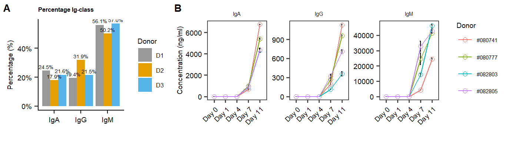

Last updated: 2023-01-17
Checks: 7 0
Knit directory:
Multimodal-Plasmacell_manuscript/
This reproducible R Markdown analysis was created with workflowr (version 1.6.2). The Checks tab describes the reproducibility checks that were applied when the results were created. The Past versions tab lists the development history.
Great! Since the R Markdown file has been committed to the Git repository, you know the exact version of the code that produced these results.
Great job! The global environment was empty. Objects defined in the global environment can affect the analysis in your R Markdown file in unknown ways. For reproduciblity it’s best to always run the code in an empty environment.
The command set.seed(20211005) was run prior to running
the code in the R Markdown file. Setting a seed ensures that any results
that rely on randomness, e.g. subsampling or permutations, are
reproducible.
Great job! Recording the operating system, R version, and package versions is critical for reproducibility.
Nice! There were no cached chunks for this analysis, so you can be confident that you successfully produced the results during this run.
Great job! Using relative paths to the files within your workflowr project makes it easier to run your code on other machines.
Great! You are using Git for version control. Tracking code development and connecting the code version to the results is critical for reproducibility.
The results in this page were generated with repository version 95e922e. See the Past versions tab to see a history of the changes made to the R Markdown and HTML files.
Note that you need to be careful to ensure that all relevant files for
the analysis have been committed to Git prior to generating the results
(you can use wflow_publish or
wflow_git_commit). workflowr only checks the R Markdown
file, but you know if there are other scripts or data files that it
depends on. Below is the status of the Git repository when the results
were generated:
Ignored files:
Ignored: .Rhistory
Ignored: .Rproj.user/
Ignored: analysis/cellstate_sidetest.Rmd
Ignored: analysis/hallmarks2.Rmd
Ignored: analysis/supplements.Rmd
Ignored: data/Seq2Science/
Ignored: data/azimuth_PBMCs/
Ignored: data/azimuth_bonemarrow/
Ignored: data/citeseqcount_htseqcount.zip
Ignored: data/genelist.plots.diffmarkers.txt
Ignored: data/genelist.plots.diffmarkers2.txt
Ignored: data/raw/
Ignored: data/supplementary/
Ignored: output/MOFA_analysis_Donorgroup.hdf5
Ignored: output/MOFA_analysis_Donorgroup.rds
Ignored: output/MOFA_analysis_Donorgroup_clustered.rds
Ignored: output/MOFA_analysis_Donorgroup_noIg.hdf5
Ignored: output/MOFA_analysis_Donorgroup_noIg2.hdf5
Ignored: output/extra plots.docx
Ignored: output/paper_figures/
Ignored: output/seu.fix_norm.rds
Ignored: output/seu.fix_norm_cellstate.rds
Ignored: output/seu.fix_norm_plasmacells.rds
Ignored: output/seu.live_norm.rds
Ignored: output/seu.live_norm_cellstate.rds
Ignored: output/seu.live_norm_plasmacells.rds
Ignored: output/seu.live_norm_plasmacells_RNA.rds
Ignored: output/top-PROT-loadings_IgA.tsv
Ignored: output/top-PROT-loadings_IgG.tsv
Ignored: output/top-PROT-loadings_IgM.tsv
Ignored: output/top-gene-loadings_IgA.tsv
Ignored: output/top-gene-loadings_IgG.tsv
Ignored: output/top-gene-loadings_IgM.csv
Ignored: output/top-gene-loadings_IgM.tsv
Unstaged changes:
Modified: .gitignore
Modified: CITATION.bib
Note that any generated files, e.g. HTML, png, CSS, etc., are not included in this status report because it is ok for generated content to have uncommitted changes.
These are the previous versions of the repository in which changes were
made to the R Markdown (analysis/cellstate.Rmd) and HTML
(docs/cellstate.html) files. If you’ve configured a remote
Git repository (see ?wflow_git_remote), click on the
hyperlinks in the table below to view the files as they were in that
past version.
| File | Version | Author | Date | Message |
|---|---|---|---|---|
| Rmd | 95e922e | Jessie van Buggenum | 2023-01-17 | final docs |
| html | b564113 | Jessie van Buggenum | 2022-12-16 | Build site. |
| Rmd | 67dc2d2 | Jessie van Buggenum | 2022-12-16 | Fig 1 and 2 and supplementary figures documentation |
| html | b6ab01b | jessievb | 2021-12-06 | Build site. |
| Rmd | 791178a | jessievb | 2021-12-06 | Plasmacell and cell-cycle gating analysis |
seu.fix <- readRDS( file = "output/seu.fix_norm.rds")
seu.live <- readRDS(file = "output/seu.live_norm.rds")Cell-cycle scoring was performed scoring algorithm UCell. (For citation see (this preprint)
s.genes <- cc.genes.updated.2019$s.genes
g2m.genes <- cc.genes.updated.2019$g2m.genes
### --- Live cells ------
# Cell-cycle scoring was performed novel scoring algorithm https://carmonalab.github.io/UCell/UCell_Seurat_vignette.html
# Genesets used also in Seurat Cell-cycle scoring
seu.live <- AddModuleScore_UCell(seu.live, assay = "SCT",slot = "data",features = cc.genes.updated.2019)
## Fetch data for plotting
data.CC.live <- FetchData(seu.live, vars = c('G2M.Score', 'S.Score', "Phase", "donor", "s.genes_UCell", "g2m.genes_UCell"))
data.CC.live$MKI67 <- FetchData(seu.live[["SCT"]], "MKI67", slot = "scale.data")$MKI67
## Plot CC score
p.CCscore.MKI67.live <- ggplot(data = data.CC.live, aes(x = g2m.genes_UCell, y =s.genes_UCell , color = MKI67)) +
geom_point( position = 'jitter', alpha = 0.8) +
scale_color_gradientn(colors = c('lightgrey', 'dodgerblue2')) +
geom_rect(mapping=aes(xmin=-0.01, xmax=0.1, ymin=-0.01, ymax=0.1), color="black", alpha=0)+
cowplot::theme_cowplot() +
labs(title = "RNA-based G2M and S-score mark \ncycling and non-cycling cells", x = "G2M-score", y = "S-score")+
add.textsize+
#facet_wrap(.~donor)+
annotate(geom = "text", label = "Non-\ncycling \n~90%", x=0.01, y = 0.09,hjust = 0,vjust = 1, size = 2) +
theme(legend.position = c(0.85,0.85), legend.key.size = unit(2, 'mm'))
## Catagorize cells based on CCscore and MKI67 as cycling or non-cycling.
data.CC.live <- mutate(data.CC.live, Proliferation_state = ifelse(g2m.genes_UCell >= 0.1 | s.genes_UCell >=0.1 | MKI67 >=1 , "cycling","non-cycling"))
seu.live <- AddMetaData(seu.live, metadata = data.CC.live$Proliferation_state, col.name = "Cellcycle_state")
Percentage_differentiated.live <- data.CC.live %>% dplyr::count(Proliferation_state = factor(Proliferation_state),group = factor(donor)) %>%
group_by(group)%>%
mutate(pct = prop.table(n))
## Plot percentage cycling per donor
p.percentage.cyclinglive <- ggplot(Percentage_differentiated.live, aes(x = Proliferation_state , y = pct, fill = group)) + #label = scales::percent(pct,accuracy = 0.1)
geom_col(position = 'dodge') +
scale_y_continuous(labels = scales::percent) +
cowplot::theme_cowplot() +
labs(title="~90% non-cycling cells \nacross three donors",x="", y = "Percentage (%)")+
scale_color_manual("Donor", values=c("#999999", "#E69F00", "#56B4E9"))+
scale_fill_manual("Donor",values=c("#999999", "#E69F00", "#56B4E9"))+
add.textsize+
theme(legend.position = c(0.05,0.85), legend.key.size = unit(4, 'mm'))
### --- fix cells ------
# Cell-cycle scoring was performed novel scoring algorithm https://carmonalab.github.io/UCell/UCell_Seurat_vignette.html
# Genesets used also in Seurat Cell-cycle scoring
seu.fix <- AddModuleScore_UCell(seu.fix, assay = "SCT",slot = "data",features = cc.genes.updated.2019)
## Fetch data for plotting
data.CC.fix <- FetchData(seu.fix, vars = c('G2M.Score', 'S.Score', "Phase", "donor", "s.genes_UCell", "g2m.genes_UCell"))
data.CC.fix$MKI67 <- FetchData(seu.fix[["SCT"]], "MKI67", slot = "scale.data")$MKI67
data.CC.fix$MKI67.PROT <- FetchData(seu.fix[["PROT"]], "Ki67", slot = "scale.data")$Ki67
data.CC.fix$`p-Rb` <- FetchData(seu.fix[["PROT"]], "p-Rb", slot = "scale.data")$`p-Rb`
data.CC.fix$CyclinA <- FetchData(seu.fix[["PROT"]], "Cyclin A", slot = "scale.data")$`Cyclin`
## Plot CC score
p.CCscore.MKI67.fix <- ggplot(data = data.CC.fix, aes(x = g2m.genes_UCell, y =s.genes_UCell , color = MKI67)) +
geom_point( position = 'jitter', alpha = 0.8) +
scale_color_gradientn(colors = c('lightgrey', 'dodgerblue2')) +
cowplot::theme_cowplot() +
labs(title = "RNA-based G2M and S-score mark \ncycling and non-cycling cells", x = "G2M-score", y = "S-score")+
add.textsize+
#facet_wrap(.~donor)+
geom_vline(xintercept = 0.1) +
geom_hline(yintercept = 0.07) +
annotate(geom = "text", label = "Non-\ncycling", x=0.01, y = 0.025, size = 2) +
theme(legend.position = c(0.85,0.85), legend.key.size = unit(2, 'mm'))
##The advantage of dataset is intracellular phospho-protein markers detected in protein dataset, which can be used to filter filter non-deviding cells. p-Rb and Cyclin A are used:
p.CCscore.pRb <- ggplot(data = data.CC.fix, aes(x = `p-Rb`, y =CyclinA , color = MKI67.PROT)) +
geom_point( position = 'jitter', alpha = 0.8) +
scale_color_gradientn(colors = c('lightgrey', 'deeppink3')) +
cowplot::theme_cowplot() +
labs(title = "Intracellular protein markers classify fixed \ndataset in cycling and non-cycling cells")+
add.textsize+
geom_rect(mapping=aes(xmin=-1.8, xmax=1.6, ymin=-2.8, ymax=2.3), color="black", alpha=0)+
annotate(geom = "text", label = "Non-\ncycling \n>95%", x=-1.7, y = 0.6,hjust = 0,vjust = 1, size = 2)+
theme(legend.position = c(0.05,0.85), legend.key.size = unit(2, 'mm'))
## Catagorize cells based on CCscore and MKI67 as cycling or non-cycling.
data.CC.fix <- mutate(data.CC.fix, Proliferation_state = ifelse( `p-Rb` >= 1.6 | CyclinA >= 2.3, "cycling","non-cycling"))
seu.fix <- AddMetaData(seu.fix, metadata = data.CC.fix$Proliferation_state, col.name = "Cellcycle_state")
Percentage_differentiated.fix <- data.CC.fix %>% dplyr::count(Proliferation_state = factor(Proliferation_state),group = factor(donor)) %>%
group_by(group)%>%
mutate(pct = prop.table(n))
## Plot percentage cycling per donor
p.percentage.cycling.fix <- ggplot(Percentage_differentiated.fix, aes(x = Proliferation_state , y = pct, fill = group, label = scales::percent(pct,accuracy = 0.1))) +
geom_col(position = 'dodge') +
geom_text(position = position_dodge(width = .9), # move to center of bars
vjust = -0.5, # nudge above top of bar
size = 1.8) +
scale_y_continuous(labels = scales::percent) +
cowplot::theme_cowplot() +
labs(title="Fixed dataset classification per donor \n>95% non-cycling cells",x="", y = "Percentage (%)")+
scale_color_manual("Donor", values=c("#E69F00", "#56B4E9"))+
scale_fill_manual("Donor",values=c("#E69F00", "#56B4E9"))+
add.textsize+
theme(legend.position = c(0.05,0.85), legend.key.size = unit(2, 'mm')) To determine the cultures ‘differentiation state’ CD27-high & IgD-low cells are gated, representing differentiated plasmablast/cells.
data.CC.fix$CD27 <- FetchData(seu.fix[["PROT"]], "CD27", slot = "scale.data")$CD27
data.CC.fix$IgD <- FetchData(seu.fix[["PROT"]], "IgD", slot = "scale.data")$IgD
data.CC.live$CD27 <- FetchData(seu.live[["PROT"]], "CD27", slot = "scale.data")$CD27
data.CC.live$IgD <- FetchData(seu.live[["PROT"]], "IgD", slot = "scale.data")$IgD
## ------ live
p.scatter.CD27.IgD.live <- ggplot(data = data.CC.live,aes(x = IgD, y = CD27, color = donor)) +
geom_point( position = 'jitter', alpha = 0.8) +
geom_rect(mapping=aes(xmin=-2.5, xmax=3, ymin=-2, ymax=2.8), color="black", alpha=0)+
cowplot::theme_cowplot() +
labs(title = "Protein-based gate of CD27+IgD- cells", x = "IgD", y = "CD27")+
theme(legend.position = "none") +
scale_color_manual("Donor", values=c("#999999", "#E69F00", "#56B4E9"))+
annotate(geom = "text", label = "CD27+IgD- \n>95%", x=-2.3, y = 2.5,hjust = 0,vjust = 1, size = 2)+
add.textsize
data.CC.live <- mutate(data.CC.live, class_switch_plasma = ifelse(IgD <= 3 & CD27 >= -2.5 , "CD27+IgD-","other"))
seu.live <- AddMetaData(seu.live, metadata = data.CC.live$class_switch_plasma, col.name = "CD27_IgD_state")
Percentage_class_switch_plasma.live <- data.CC.live %>% dplyr::count(class_switch_plasma = factor(class_switch_plasma),group = factor(donor)) %>%
group_by(group)%>%
mutate(pct = prop.table(n))
p.percentage.class_switch_plasma.live <- ggplot(Percentage_class_switch_plasma.live, aes(x = class_switch_plasma , y = pct, fill = group, label = scales::percent(pct, accuracy = 0.1))) +
geom_col(position = 'dodge') +
geom_text(position = position_dodge(width = .9), # move to center of bars
vjust = -0.5, # nudge above top of bar
size = 1.8) +
scale_y_continuous(labels = scales::percent) +
cowplot::theme_cowplot() +
labs(title="~95% cells in all three donors \nare Plasma Blast/Cells",x="", y = "Percentage (%)")+
scale_fill_manual(name = "Donor",values=c("#999999", "#E69F00", "#56B4E9")) +
theme(legend.position = c(0.7,0.85), legend.key.size = unit(2, "mm"))+
add.textsize
## --- fix
## fix
p.scatter.CD27.IgD.fix <- ggplot(data = data.CC.fix,aes(x = IgD, y = CD27, color = donor)) +
geom_point( position = 'jitter', alpha = 0.8) +
geom_rect(mapping=aes(xmin=-4, xmax=4.2, ymin=-1.3, ymax=2), color="black", alpha=0)+
cowplot::theme_cowplot() +
labs(title = "Protein-based gate of CD27+IgD- cells", x = "IgD", y = "CD27")+
theme(legend.position = c(0.85,0.85)) +
scale_color_manual("Donor", values=c( "#E69F00", "#56B4E9"))+
add.textsize +
xlim(c(NA,7.5))
data.CC.fix <- mutate(data.CC.fix, class_switch_plasma = ifelse(IgD <= 4.2 & CD27 >= -1.3 , "CD27+IgD-","other"))
seu.fix <- AddMetaData(seu.fix, metadata = data.CC.fix$class_switch_plasma, col.name = "CD27_IgD_state")
Percentage_class_switch_plasma.fix <- data.CC.fix %>% dplyr::count(class_switch_plasma = factor(class_switch_plasma),group = factor(donor)) %>%
group_by(group)%>%
mutate(pct = prop.table(n))
p.percentage.class_switch_plasma.fix <- ggplot(Percentage_class_switch_plasma.fix, aes(x = class_switch_plasma , y = pct, fill = group, label = scales::percent(pct, accuracy = 0.1))) +
geom_col(position = 'dodge') +
geom_text(position = position_dodge(width = .9), # move to center of bars
vjust = -0.5, # nudge above top of bar
size = 1.8) +
scale_y_continuous(labels = scales::percent) +
cowplot::theme_cowplot() +
labs(title="Fixed dataset % cells CD27+IgD-",x="", y = "Percentage (%)")+
scale_fill_manual(name = "Donor",values=c( "#E69F00", "#56B4E9")) +
theme(legend.position = c(0.7,0.9), legend.key.size = unit(2, 'mm'))+
add.textsizeseu.live <- SetIdent(seu.live,value = "CD27_IgD_state")
## RNA differential expression
markers.CD27IgD.RNA <- FindMarkers(seu.live, ident.1 = "CD27+IgD-", ident.2 = "other", assay = "SCT", logfc.threshold = 0.01, test.use = "wilcox", only.pos = T)
markers.CD27IgD.RNA <- filter(markers.CD27IgD.RNA, p_val <= 0.05)
p.CD27IgD.dotplot.genesign <-DotPlot(seu.live,assay = "SCT", features = rev(rownames(markers.CD27IgD.RNA)[1:20]), split.by = "donor", group.by = "CD27_IgD_state", cols = "RdBu",dot.scale = 3, scale.max = 100, scale.min = 0, scale = T, scale.by = "radius", col.min = -0.5, col.max = 0.5) +
labs(x = "Differentiation markers - RNA", y = "") +
cowplot::theme_cowplot() +
labs(title=paste0("Top 20 upregulated genes \n(", nrow(markers.CD27IgD.RNA)," total)"),x="Differential expressed genes \n(p-val < 0.05, logfc >= 0.01)", y = "")+
coord_flip()+
add.textsize +
theme(legend.position = "right", legend.key.size = unit(2, 'mm')) +
scale_y_discrete(labels = c("D1 \n","D2 \nCD27+IgD-", "D3","D1 \n","D2 \nother", "D3"))
#+ guides(size = "none",color = "none")
p.CD27IgD.Vln.gene.markers <- VlnPlot(seu.live, assay="SCT", features = c("CD27","IRF4", "MZB1", "PTPRC", "MS4A1"), split.by = "donor", group.by = "CD27_IgD_state", ncol =3, cols = c(colors.donors,colors.donors), combine = T, stack = T, flip = T) +
add.textsize +
theme(legend.position = "", legend.key.size = unit(2, 'mm')) +
labs(title="CD27+IgD express plasmablast/cell \nRNA markers",x="", y = "Expression") +
theme(axis.text.x = element_text(angle = 0, hjust = 0.5))
## RNA differential expression
markers.CD27IgD.RNA.neg <- FindMarkers(seu.live, ident.1 = "CD27+IgD-", ident.2 = "other", assay = "SCT", logfc.threshold = -0.01, test.use = "wilcox", only.pos = F)
markers.CD27IgD.RNA.neg <- filter(markers.CD27IgD.RNA.neg, p_val <= 0.05, avg_log2FC < -0.01)
p.CD27IgD.dotplot.genesign.neg <-DotPlot(seu.live,assay = "SCT", features = rev(rownames(markers.CD27IgD.RNA.neg)[1:20]), split.by = "donor", group.by = "CD27_IgD_state", cols = "RdBu",dot.scale = 3, scale.max = 100, scale.min = 0, scale = T, scale.by = "size", col.min = -0.5, col.max = 0.5) +
labs(x = "Differentiation markers - RNA", y = "") +
cowplot::theme_cowplot() +
labs(title=paste0("Top 20 downregulated genes \n(", nrow(markers.CD27IgD.RNA.neg)," total)"),x="Differential expressed genes \n(p-val < 0.05, logfc <= -0.01)", y = "")+
coord_flip()+
add.textsize +
theme(legend.position = "right", legend.key.size = unit(2, 'mm')) +
scale_y_discrete(labels = c("D1 \n","D2 \nCD27+IgD-", "D3","D1 \n","D2 \nother", "D3")) +
guides(size = guide_legend(title = "Percent \nexpressed"),color = guide_colorbar(title = "Average scaled\nexpression"))
#+ guides(size = "none",color = "none")
## Surface proteins
markers.CD27IgD.PROT <- FindMarkers(seu.live, ident.1 = "CD27+IgD-", ident.2 = "other", assay = "PROT", logfc.threshold = 0.01, test.use = "wilcox", only.pos = T)
markers.CD27IgD.PROT <- filter(markers.CD27IgD.PROT, p_val <= 0.05)
p.CD27IgD.dotplot.PROTsign <-DotPlot(seu.live,assay = "PROT", features = rev(rownames(markers.CD27IgD.PROT)), split.by = "donor", group.by = "CD27_IgD_state", cols = "RdBu",dot.scale = 3, scale.max = 100, scale.min = 0, scale = T, scale.by = "radius", col.min = -0.5, col.max = 0.5) +
cowplot::theme_cowplot() +
labs(title="Differential upregulated \nSurface protein markers",x="Surface Proteins \n(p-val < 0.005, logfc >= 0.01)", y = "")+
coord_flip()+
add.textsize +
theme(legend.position = "right", legend.key.size = unit(2, 'mm')) +
scale_y_discrete(labels = c("D1 \n","D2 \nCD27+IgD-", "D3","D1 \n","D2 \nother", "D3"))+
guides(size = "none",color = "none")
markers.CD27IgD.PROT.neg <- FindMarkers(seu.live, ident.1 = "CD27+IgD-", ident.2 = "other", assay = "PROT", logfc.threshold = 0.01, test.use = "wilcox", only.pos = F)
markers.CD27IgD.PROT.neg <- filter(markers.CD27IgD.PROT.neg, p_val <= 0.005, avg_log2FC < -0.01)
p.CD27IgD.dotplot.PROTsign.neg <-DotPlot(seu.live,assay = "PROT", features = rev(rownames(markers.CD27IgD.PROT.neg)), split.by = "donor", group.by = "CD27_IgD_state", cols = "RdBu",dot.scale = 3, scale.max = 100, scale.min = 0, scale = T, scale.by = "radius", col.min = -0.5, col.max = 0.5) +
cowplot::theme_cowplot() +
labs(title="Differential downregulated \nSurface protein markers",x="Surface Proteins \n(p-val < 0.005, logfc <= -0.01)", y = "")+
coord_flip()+
add.textsize +
theme(legend.position = "right", legend.key.size = unit(2, 'mm')) +
scale_y_discrete(labels = c("D1 \n","D2 \nCD27+IgD-", "D3","D1 \n","D2 \nother", "D3"))+
guides(size = "none",color = guide_colorbar(title = "Average scaled\nexpression"))
## Intracellular proteins
seu.fix <- SetIdent(seu.fix,value = "CD27_IgD_state")
markers.CD27IgD.PROT.intra <- FindMarkers(seu.fix, ident.1 = "CD27+IgD-", ident.2 = "other", assay = "PROT", logfc.threshold = 0.05, test.use = "wilcox", only.pos = T)
markers.CD27IgD.PROT.intra <- filter(markers.CD27IgD.PROT.intra, p_val <= 0.05)
p.CD27IgD.dotplot.PROT.intra.sign <- DotPlot(seu.fix,assay = "PROT", features = rev(rownames(markers.CD27IgD.PROT.intra)), split.by = "donor", group.by = "CD27_IgD_state", cols = "RdBu",dot.scale = 3, scale.max = 100, scale.min = 0, scale = T, scale.by = "radius", col.min = -0.5, col.max = 0.5) +
cowplot::theme_cowplot() +
labs(title="Differential upregulated \nIntracellular protein markers",x="Intracellular proteins \n(p-val < 0.005, logfc >= 0.01)", y = "")+
coord_flip()+
add.textsize +
theme(legend.position = "none", legend.key.size = unit(2, 'mm')) +
scale_y_discrete(labels = c("D2 \nCD27+IgD-", "D3","D2 \nother", "D3"))
markers.CD27IgD.PROT.intra.neg <- FindMarkers(seu.fix, ident.1 = "CD27+IgD-", ident.2 = "other", assay = "PROT", logfc.threshold = 0.01, test.use = "wilcox", only.pos = F)
markers.CD27IgD.PROT.intra.neg <- filter(markers.CD27IgD.PROT.intra.neg, p_val <= 0.005, avg_log2FC < -0.01)
p.CD27IgD.dotplot.PROTsign.intra.neg <-DotPlot(seu.fix,assay = "PROT", features = rev(rownames(markers.CD27IgD.PROT.intra.neg)), split.by = "donor", group.by = "CD27_IgD_state", cols = "RdBu",dot.scale = 3, scale.max = 100, scale.min = 0, scale = T, scale.by = "radius", col.min = -0.5, col.max = 0.5) +
cowplot::theme_cowplot() +
labs(title="Differential downregulated \nSurface protein markers",x="Intracellular Proteins \n(p-val < 0.005, logfc <= -0.01)", y = "")+
coord_flip()+
add.textsize +
theme(legend.position = "right", legend.key.size = unit(2, 'mm')) +
scale_y_discrete(labels = c("D1 \n","D2 \nCD27+IgD-", "D3","D1 \n","D2 \nother", "D3"))+
guides(size = "none",color = guide_colorbar(title = "Average scaled\nexpression"))
markers.forviolin <- c("CD138","BLIMP1","IRF4", "IRF8", "XBP1", "CD27","CD24")[c("CD138","BLIMP1","IRF4", "IRF8", "XBP1", "CD27","CD24") %in% rev(rownames(markers.CD27IgD.PROT.intra))]
p.CD27IgD.Vln.PROT.markers <- VlnPlot(seu.fix, assay="PROT", features = rev(c(markers.forviolin)), split.by = "donor", group.by = "CD27_IgD_state", ncol =3, cols = c(colors.donors[2:3],colors.donors[2:3]), combine = T, stack = T, flip = T) +
add.textsize +
theme(legend.position = "right", legend.key.size = unit(2, 'mm')) +
labs(title="CD27+IgD express plasmablast/cell \nIntracellular protein markers",x="", y = "Expression") +
theme(axis.text.x = element_text(angle = 0, hjust = 0.5))
p.CD27IgD.dotplot.PROT.intra.markers <- DotPlot(seu.fix,assay = "PROT", features = rev(c(markers.forviolin)), split.by = "donor", group.by = "CD27_IgD_state", cols = "RdBu",dot.scale = 3, scale.max = 100, scale.min = 0, scale = T, scale.by = "radius", col.min = -1, col.max = 1) +
labs(x = "Differentiation markers - Surface Proteins", y = "") +
cowplot::theme_cowplot() +
labs(title="CD27+IgD express plasmablast/cell \nIntracellular protein markers",x="Differentiation proteins", y = "", colour = "Legend Title\n")+
coord_flip()+
add.textsize +
theme(legend.position = "right", legend.key.size = unit(2, 'mm')) +
scale_y_discrete(labels = c("D2 \nCD27+IgD-", "D3","D2 \nother", "D3")) +
guides(size = "none",color = guide_colorbar(title = "Average \nExpression"))Fixed-cell dataset: (original and CD27+IgD- object )
message("Fixed dataset:")
seu.fixAn object of class Seurat
10114 features across 1038 samples within 3 assays
Active assay: PROT (76 features, 76 variable features)
2 other assays present: RNA, SCTseu.fix.filtered <- subset(seu.fix, Cellcycle_state == "non-cycling" & CD27_IgD_state == "CD27+IgD-")
message("CD27+IgD- object:")
seu.fix.filteredAn object of class Seurat
10114 features across 940 samples within 3 assays
Active assay: PROT (76 features, 76 variable features)
2 other assays present: RNA, SCTLive-cell dataset: (original and CD27+IgD- object )
seu.liveAn object of class Seurat
20366 features across 1433 samples within 3 assays
Active assay: PROT (50 features, 50 variable features)
2 other assays present: RNA, SCTseu.live.filtered <- subset(seu.live, Cellcycle_state == "non-cycling" & CD27_IgD_state == "CD27+IgD-")
seu.live.filteredAn object of class Seurat
20366 features across 1231 samples within 3 assays
Active assay: PROT (50 features, 50 variable features)
2 other assays present: RNA, SCT##Save seurat objects with all cells & information on CC , CD27, and Ig-subclasses.
#saveRDS(seu.fix, "output/seu.fix_norm_cellstate.rds")
#saveRDS(seu.live, "output/seu.live_norm_cellstate.rds")
seu.fix <- seu.fix.filtered
seu.live <- seu.live.filteredThe supernatant of differentiated cells shows excretion of IgA and IgG antibodies, showing these cell-types should be within the population at 11 days. Using protein-measurements from antibodies against the major Ig-classes, and (in live-cell dataset) the Ig-genes, cells are clustered and represented in a UMAP.
## Run PCA on Ig proteins
seu.fix <- RunPCA(seu.fix, reduction.name = 'pcaIG', features = c("IgM","IgA","IgG", "IgD", "IgE"))
seu.fix <- RunUMAP(seu.fix,dims = 1:4, reduction = "pcaIG", reduction.name = "IGUMAP")
seu.fix <- FindNeighbors(seu.fix, reduction = "pcaIG",assay = "PROT", dims = 1:4, graph.name = "pcaIG_nn")
seu.fix <- FindClusters(seu.fix, graph.name = "pcaIG_nn", algorithm = 3,resolution = 0.2, verbose = FALSE)
seu.fix[["clusters_pcaIG"]] <- Idents(object = seu.fix)
seu.fix <- RenameIdents(object = seu.fix, `0` = "IgM", `1` = "IgG", `2` = "IgA")
seu.fix[["clusters_pcaIG_named"]] <- Idents(object = seu.fix)
## ---- live cells
## Run PCA on Ig proteins and on Ig genes
seu.live <- RunPCA(seu.live, assay = "PROT",reduction.name = 'pcaIGPROT', features = c("IgM","IgA","IgG", "IgD", "IgE"))
seu.live <- RunUMAP(seu.live,dims = 1:4, reduction = "pcaIGPROT", reduction.name = "IGUMAP")
seu.live <- FindNeighbors(seu.live, reduction = "pcaIGPROT",assay = "PROT", dims = 1:4, graph.name = "pcaIG_nn")
seu.live <- FindClusters(seu.live, graph.name = "pcaIG_nn", algorithm = 3,resolution = 0.2, verbose = FALSE)
seu.live[["clusters_pcaIG"]] <- Idents(object = seu.live)
seu.live <- RenameIdents(object = seu.live, `0` = "IgM", `1` = "IgG", `2` = "IgA")
seu.live[["clusters_pcaIG_named"]] <- Idents(object = seu.live)### Plots Ig-protein based clustering
p.umap.Ig.prot.fix <- FeaturePlot(seu.fix, features = c("IgM","IgA","IgG"),slot = "scale.data", reduction = 'IGUMAP', max.cutoff = 2,
cols = c("lightgrey","deeppink3"), ncol = 3, pt.size = 0.9) &
labs(x = "UMAP 1", y = "UMAP 2", color = "Scaled \ncounts") &
theme_half_open()&
theme(legend.position = c(0.85,0.85), legend.key.size = unit(2, 'mm')) &
theme(axis.text.x = element_blank(),
axis.text.y = element_blank(),
text = element_text(size=7), axis.ticks = element_blank(),
axis.text=element_text(size=7),
plot.title = element_text(size=7, face = "bold",hjust = 0.5))
p.clusters.umap.fix <- DimPlot(seu.fix, reduction = 'IGUMAP',group.by ="clusters_pcaIG_named" , label = TRUE, repel = TRUE, label.size = 2.5, cols = c("#009E73", "#D55E00","#F0E442")
) &
labs(x = "UMAP 1", y = "UMAP 2", color = "Clusters", title = "Fixed cells clusters based on \nIg-protein marker expression") &
theme_half_open()&
theme(legend.position = "none", legend.key.size = unit(2, 'mm')) &
theme(axis.text.x = element_blank(),
axis.text.y = element_blank(),
text = element_text(size=7), axis.ticks = element_blank(),
axis.text=element_text(size=7),
plot.title = element_text(size=6, face = "bold"))
p.umap.Ig.prot.live <- FeaturePlot(seu.live, features = c("IgM","IgA","IgG"),slot = "scale.data", reduction = 'IGUMAP', max.cutoff = 2,
cols = c("lightgrey","deeppink3"), ncol = 3, pt.size = 0.5) &
labs(x = "UMAP 1", y = "UMAP 2", color = "") &
theme_half_open()&
theme(legend.position = c(0.85,0.95), legend.key.size = unit(2, 'mm')) &
theme(axis.text.x = element_blank(),
axis.text.y = element_blank(),
text = element_text(size=7), axis.ticks = element_blank(),
axis.text=element_text(size=7),
plot.title = element_text(size=7, face = "bold",hjust = 0.5))
p.umap.Ig.RNA.live <- FeaturePlot(seu.live, features = c("IGHM","IGHA1","IGHG1"),slot = "scale.data", reduction = 'IGUMAP', max.cutoff = 3,
cols = c("lightgrey","dodgerblue3"), ncol = 3, pt.size = 0.5) &
labs(x = "UMAP 1", y = "UMAP 2", color = "") &
theme_half_open()&
theme(legend.position = c(0.85,0.95), legend.key.size = unit(2, 'mm')) &
theme(axis.text.x = element_blank(),
axis.text.y = element_blank(),
text = element_text(size=7), axis.ticks = element_blank(),
axis.text=element_text(size=7),
plot.title = element_text(size=7, face = "bold",hjust = 0.5))
p.clusters.umap.live <- DimPlot(seu.live, reduction = 'IGUMAP', label = TRUE, repel = TRUE, label.size = 2.5,pt.size = 0.5, cols = c("#009E73", "#D55E00","#F0E442","grey")
) &
labs(x = "UMAP 1", y = "UMAP 2", color = "Clusters", title = "Igsubtype classification based on \nProtein modality") &
theme_half_open()&
theme(legend.position = "none", legend.key.size = unit(1, 'mm')) &
theme(axis.text.x = element_blank(),
axis.text.y = element_blank(),
text = element_text(size=7), axis.ticks = element_blank(),
axis.text=element_text(size=7),
plot.title = element_text(size=6, face = "bold"))
p.donor.umap.live <- DimPlot(seu.live, reduction = 'IGUMAP', group.by = "donor",label = F, pt.size = 0.5,repel = TRUE, label.size = 2.5, cols = colors.donors) &
labs(x = "UMAP 1", y = "UMAP 2", color = "Donor", title = "Ig-subtypes classified across \nthree donors") &
theme_half_open()&
theme(legend.position = c(0.85, 0.95), legend.key.size = unit(1, 'mm'), legend.text =element_text(size=6), legend.title =element_text(size=7) ) &
theme(axis.text.x = element_blank(),
axis.text.y = element_blank(),
text = element_text(size=7), axis.ticks = element_blank(),
axis.text=element_text(size=7),
plot.title = element_text(size=6, face = "bold"))fix.meta <- seu.fix.filtered@meta.data %>%
mutate(cell = rownames(seu.fix.filtered@meta.data),
dataset = "fix")
live.meta <- seu.live.filtered@meta.data%>%
mutate(cell = rownames(seu.live.filtered@meta.data),
dataset = "live")library(MOFA2)fix.DT.RNA <- seu.fix.filtered@assays$SCT@scale.data[rownames(seu.fix.filtered@assays$SCT@scale.data) %chin% VariableFeatures(seu.fix.filtered,assay = "SCT"),]
fix.var.genes <- rownames(fix.DT.RNA)
fix.DT.PROT <- seu.fix.filtered@assays$PROT@scale.data[rownames(seu.fix.filtered@assays$PROT@scale.data) %chin% VariableFeatures(seu.fix.filtered,assay = "PROT"),]
fix.var.prot <- rownames(fix.DT.PROT)
live.DT.RNA <- seu.live.filtered@assays$SCT@scale.data[rownames(seu.live.filtered@assays$SCT@scale.data) %chin% VariableFeatures(seu.live.filtered,assay = "SCT"),]
live.var.genes <- rownames(live.DT.RNA)
live.DT.PROT <- seu.live.filtered@assays$PROT@scale.data[rownames(seu.live.filtered@assays$PROT@scale.data) %chin% VariableFeatures(seu.live.filtered,assay = "PROT"),]
live.var.prot <- rownames(live.DT.PROT)
fix.meta <- seu.fix.filtered@meta.data %>%
mutate(cell = rownames(seu.fix.filtered@meta.data),
dataset = "fix")
live.meta <- seu.live.filtered@meta.data%>%
mutate(cell = rownames(seu.live.filtered@meta.data),
dataset = "live")
##
common.proteins <- c("TACI","CD70","IgD","CD86","CD5","PDL1","PDL2","CD21","IgM","CD11b","CD53","CD45","CD80","IgG","IgA","IgE","BAFFR")
fix.DT.RNA <- data.table(fix.DT.RNA) %>%
mutate(gene = fix.var.genes)
fix.DT.PROT <- data.table(fix.DT.PROT) %>%
mutate(gene = fix.var.prot)
fix.DT.PROT.unique <- fix.DT.PROT[!(fix.var.prot %chin% common.proteins),] %>%
mutate(gene = paste0(gene, "_f"))
fix.DT.PROT.common <- fix.DT.PROT[(fix.var.prot %chin% common.proteins),]
fix.DT.PROT.rename <- bind_rows(fix.DT.PROT.unique,fix.DT.PROT.common)
#rownames(fix.DT.PROT.rename) <- fix.DT.PROT.rename$gene
live.DT.RNA <- data.table(live.DT.RNA) %>%
mutate(gene = live.var.genes)
live.DT.PROT <- data.table(live.DT.PROT) %>%
mutate(gene = live.var.prot)
live.DT.PROT.unique <- live.DT.PROT[!(live.var.prot %chin% common.proteins),] %>%
mutate(gene = paste0(gene, "_l"))
live.DT.PROT.common <- live.DT.PROT[(live.var.prot %chin% common.proteins),]
live.DT.PROT.rename <- bind_rows(live.DT.PROT.unique,live.DT.PROT.common)
## merge data
meta.all <- merge.data.table(x = fix.meta, y=live.meta, all = TRUE)
meta.all$sample <- meta.all$cell
meta.all$group <- meta.all$donor
RNA.all <- merge.data.table(x = fix.DT.RNA, y=live.DT.RNA, all = TRUE)
rownames(RNA.all) <- RNA.all$gene
RNA.all <- RNA.all[,gene:=NULL]
PROT.all <- merge.data.table(x = fix.DT.PROT.rename, y=live.DT.PROT.rename, all = TRUE)
rownames(PROT.all) <- PROT.all$gene
PROT.all <- PROT.all[,gene:=NULL]
RNA.live.only <- RNA.all[rownames(RNA.all) %chin% VariableFeatures(seu.live.filtered, assay = "SCT"),]
genes.RNA.live.only <- rownames(RNA.all)[rownames(RNA.all) %chin% VariableFeatures(seu.live.filtered, assay = "SCT")]
RNA.live.only <- as.matrix(RNA.live.only)
#genes.RNA.live.only <- tolower(genes.RNA.live.only)
rownames(RNA.live.only) <- genes.RNA.live.only
#RNA.live.only[,c(which(meta.all$dataset== "fix"))] <- NA #?
## split data tables
### PROT
PROT.common <- PROT.all[rownames(PROT.all) %chin% common.proteins,]
list.common.prot <- rownames(PROT.all)[rownames(PROT.all) %chin% common.proteins]
PROT.common <- as.matrix(PROT.common, rownames.value = list.common.prot)
#rownames(PROT.common) <- paste0(rownames(PROT.common),"_PROT")
#PROT.IG <- PROT.all[rownames(PROT.all) %chin% c("IgA", "IgM", "IgG", "IgD", "IgE"),]
#list.IG.prot <- rownames(PROT.all)[rownames(PROT.all) %chin% c("IgA", "IgM", "IgG", "IgD", "IgE")]
#PROT.IG <- as.matrix(PROT.IG, rownames.value = list.IG.prot)
PROT.fix <- PROT.all[c(rownames(PROT.all) %chin% fix.DT.PROT.unique$gene),]
list.fix.prot <-rownames(PROT.all)[c(rownames(PROT.all) %chin% fix.DT.PROT.unique$gene)]
PROT.fix <- as.matrix(PROT.fix, rownames.value = list.fix.prot)
#rownames(PROT.fix) <- paste0(rownames(PROT.fix),"_PROT")
PROT.live <- PROT.all[c(rownames(PROT.all) %chin% live.DT.PROT.unique$gene) ,]
list.live.prot <- rownames(PROT.all)[c(rownames(PROT.all) %chin% live.DT.PROT.unique$gene) ]
PROT.live <- as.matrix(PROT.live, rownames.value = list.live.prot)
### RNA
RNA.common <- RNA.all[rownames(RNA.all) %chin% rownames(seu.fix.filtered[["SCT"]])[rownames(seu.fix.filtered[["SCT"]]) %chin% rownames(seu.live.filtered[["SCT"]])],]
list.common.RNA <- rownames(RNA.all)[rownames(RNA.all) %chin% rownames(seu.fix.filtered[["SCT"]])[rownames(seu.fix.filtered[["SCT"]]) %chin% rownames(seu.live.filtered[["SCT"]])]]
list.common.RNA <- tolower(list.common.RNA)
RNA.common <- as.matrix(RNA.common, rownames.value = list.common.RNA)
#RNA.IG <- RNA.all[rownames(RNA.all) %chin% c("IgA", "IgM", "IgG", "IgD", "IgE"),]
#list.IG.RNA <- rownames(RNA.all)[rownames(RNA.all) %chin% c("IgA", "IgM", "IgG", "IgD", "IgE")]
#RNA.IG <- as.matrix(RNA.IG, rownames.value = list.IG.RNA)
RNA.fix <- RNA.all[!c(rownames(RNA.all) %chin% list.common.RNA) & rownames(RNA.all) %chin% rownames(seu.fix.filtered[["SCT"]]),]
list.fix.RNA <-rownames(RNA.all)[!c(rownames(RNA.all) %chin% list.common.RNA) & rownames(RNA.all) %chin% rownames(seu.fix.filtered[["SCT"]])]
list.fix.RNA <- tolower(list.fix.RNA)
RNA.fix <- as.matrix(RNA.fix, rownames.value = list.fix.RNA)
RNA.live <- RNA.all[!c(rownames(RNA.all) %chin% list.common.RNA) & !c(rownames(RNA.all) %chin% list.fix.RNA) ,]
list.live.RNA <- rownames(RNA.all)[!c(rownames(RNA.all) %chin% list.common.RNA) & !c(rownames(RNA.all) %chin% list.fix.RNA) ]
#list.live.RNA <- tolower(list.live.RNA)
RNA.live <- as.matrix(RNA.live, rownames.value = list.live.RNA)
###
all.features <- c(rownames(RNA.live.only),rownames(PROT.common), rownames(PROT.live), rownames(PROT.fix))
duplicated.features <- all.features[duplicated(all.features)]
RNA.live.only <- data.table(RNA.live.only) %>%
mutate(gene = rownames(RNA.live.only))
rownames.rna.live.only <- RNA.live.only$gene
RNA.live.only <- RNA.live.only %>%
dplyr::select(-c("gene"))
RNA.live.only <- as.matrix(RNA.live.only)
#genes.RNA.live.only <- tolower(genes.RNA.live.only)
rownames(RNA.live.only) <- rownames.rna.live.only
all.features <- c(rownames(RNA.live.only),rownames(PROT.common), rownames(PROT.live), rownames(PROT.fix))
duplicated.features <- all.features[duplicated(all.features)]myfiles <- list.files(path="output/", pattern = ".rds$")
if("MOFA_analysis_Donorgroup.rds" %in% myfiles){mofa <- readRDS("output/MOFA_analysis_Donorgroup.rds")} else { #If so, read object, else do:
mofa <- create_mofa(data = list(RNA = RNA.live.only, PROT.common = PROT.common,PROT.live = PROT.live, PROT.fix = PROT.fix ), groups = meta.all$group)
# Default settings used (try 15 factors, excludes all non-informative factors)
data_opts <- get_default_data_options(mofa)
model_opts <- get_default_model_options(mofa)
train_opts <- get_default_training_options(mofa)
train_opts$seed <- 42 # use same seed for reproducibility
mofa <- prepare_mofa(
object = mofa,
data_options = data_opts,
model_options = model_opts,
training_options = train_opts
)
mofa <- run_mofa(mofa, outfile = "output/MOFA_analysis_Donorgroup.hdf5", use_basilisk = TRUE)
mofa <- run_umap(mofa)
samples_metadata(mofa) <- meta.all
#saveRDS(mofa, file= "output/MOFA_analysis_Donorgroup.rds")
}
mofaTrained MOFA with the following characteristics:
Number of views: 4
Views names: RNA PROT.common PROT.live PROT.fix
Number of features (per view): 3000 17 33 59
Number of groups: 3
Groups names: D1 D2 D3
Number of samples (per group): 433 871 867
Number of factors: 9 p.mofaoverview.input <- plot_data_overview(mofa)
## Variance per factor
p.variance.perfactor.all <- plot_variance_explained(mofa, x="view", y="factor") +
labs(title = "Variance explained by each factor per modality") +
RotatedAxis()
## variance total
p.variance.total <- plot_variance_explained(mofa, x="view", y="factor", plot_total = T)
#
p.variance.total <- plot_variance_explained(mofa, x="group", y="factor", plot_total = T)
p.variance.total <- p.variance.total[[2]] +
add.textsize +
labs(title = "Total variance per modality") +
geom_text(aes(label=round(R2,1)), vjust=1.6, color="white", size=2.5) +
theme_classic()+
RotatedAxis()
factors.selected <- paste0("Factor",1:5)
plot.rank.PROT <- plot_weights(mofa,
view = "PROT.common",
factors = factors.selected,
nfeatures = 10,
text_size =3
) +
labs(title = "Top 10 Common Protein loadings per factor") +
theme(axis.text.y=element_blank(),
axis.ticks.y=element_blank()
)p.factors.Igclasses.PROT<- plot_factors(mofa,
factors = c(1:2),
color_by = "IgM",dot_size = 1.2
) +
labs(title="MOFA factor 1 & 2 distinguish Ig-classes \nProtein expression")+
plot_factors(mofa,
factors =c(1:2),
color_by = "IgA",dot_size = 1.2
)+
plot_factors(mofa,
factors = c(1:2),
color_by = "IgG",dot_size = 1.2
) &
add.textsize &
labs(x = "Factor 1", y = "Factor 2", color = "Scaled \ncounts") &
theme_half_open()&
theme(legend.position = c(0.85,0.95), legend.key.size = unit(2, 'mm')) &
theme(axis.text.x = element_blank(),
axis.text.y = element_blank(),
text = element_text(size=7), axis.ticks = element_blank(),
axis.text=element_text(size=7),
plot.title = element_text(size=7, face = "bold",hjust = 0)) &
scale_fill_gradient(low = "white", high = "deeppink3")
p.factors.Igclasses.mRNA <- plot_factors(mofa,
factors =c(1:2),
color_by = "IGHM",dot_size = 1.2, show_missing = F,alpha = 0.5
) +labs(title="mRNA expression")+
plot_factors(mofa,
factors = c(1:2),
color_by = "IGHA1",dot_size = 1.2, show_missing = F,alpha = 0.5
) +
plot_factors(mofa,
factors =c(1:2),
color_by = "IGHG1",dot_size = 1.2, show_missing = F,alpha = 0.5
) &
add.textsize &
labs(x = "Factor 1", y = "Factor 2", color = "Scaled \ncounts") &
theme_half_open()&
theme(legend.position = c(0.85,0.95), legend.key.size = unit(2, 'mm')) &
theme(axis.text.x = element_blank(),
axis.text.y = element_blank(),
text = element_text(size=7), axis.ticks = element_blank(),
axis.text=element_text(size=7),
plot.title = element_text(size=7, face = "bold",hjust = 0)) &
scale_fill_gradient(low = "white", high = "dodgerblue3")clusters <- cluster_samples(mofa, k=3, factors=c(1,2) )
meta.all.cluster <- meta.all[,] %>%
left_join(data.frame(sample = names(clusters$cluster), cluster = clusters$cluster))
meta.all.cluster$cluster <- as.factor(meta.all.cluster$cluster)
samples_metadata(mofa) <-meta.all.clusterclustermeta <- mofa@samples_metadata %>%
mutate(IgClass = ifelse(cluster == "1", "IgM", ifelse(cluster == "3", "IgA", "IgG")))
samples_metadata(mofa) <- clustermeta
Percentage_cluster <- clustermeta %>% dplyr::count(IgClass = factor(IgClass),group = factor(donor)) %>%
group_by(group)%>%
mutate(pct = prop.table(n))
p.percentages.Igclasses.MOFAclusters <- ggplot(Percentage_cluster, aes(x = IgClass , y = pct, fill = group, label = scales::percent(pct,accuracy = 0.1))) +
geom_col(position = 'dodge') +
geom_text(position = position_dodge(width = .9), # move to center of bars
vjust = -0.5, # nudge above top of bar
size = 1.8) +
scale_y_continuous(labels = scales::percent) +
cowplot::theme_cowplot() +
labs(title="Percentage Ig-class",x="", y = "Percentage (%)")+
scale_x_discrete(labels = c("1" = "IgG", "2" ,"3")) +
scale_color_manual("Donor", values=c("#999999", "#E69F00", "#56B4E9"))+
scale_fill_manual("Donor",values=c("#999999", "#E69F00", "#56B4E9"))+
add.textsizep.MOFA.factors.dataset <- plot_factors(mofa,
factors = c(1:2),
color_by = "dataset",
alpha = 0.8,
dot_size = 1.2
) +
labs(title = "MOFA analysis integrates \nthe two datasets") +
scale_fill_manual("Dataset",values=c("lightgrey", "black")) &
add.textsize &
labs(x = "Factor 1", y = "Factor 2", color = "Scaled \ncounts") &
theme_half_open()&
theme(legend.position = c(0.85,0.95), legend.key.size = unit(2, 'mm')) &
theme(axis.text.x = element_blank(),
axis.text.y = element_blank(),
text = element_text(size=7), axis.ticks = element_blank(),
axis.text=element_text(size=7),
plot.title = element_text(size=7, face = "bold",hjust = 0))
p.MOFA.factors.donors <- plot_factors(mofa,
factors = c(1:2),
color_by = "donor",
alpha = 0.8,
dot_size = 1.2
) +labs(title = "MOFA factors are computed \nacross three donors") +
scale_fill_manual("Donor",values=colors.donors) &
add.textsize &
labs(x = "Factor 1", y = "Factor 2", color = "Donor") &
theme_half_open()&
theme(legend.position = c(0.85,0.95), legend.key.size = unit(2, 'mm')) &
theme(axis.text.x = element_blank(),
axis.text.y = element_blank(),
text = element_text(size=7), axis.ticks = element_blank(),
axis.text=element_text(size=7),
plot.title = element_text(size=7, face = "bold",hjust = 0))
p.MOFA.factors.cluster <- plot_factors(mofa,
factors =c(1:2),
color_by = "IgClass",
dot_size = 1.2
) +labs(title = "k-means clustering on Factor 1 & 2") +
scale_fill_manual("Cluster",values= colors.clusters) &
labs(x = "Factor 1", y = "Factor 2", color = "Donor") &
theme_half_open()&
theme(legend.position = c(0.85,0.95), legend.key.size = unit(2, 'mm')) &
theme(axis.text.x = element_blank(),
axis.text.y = element_blank(),
text = element_text(size=10), axis.ticks = element_blank(),
axis.text=element_text(size=10),
plot.title = element_text(size=10, face = "bold",hjust = 0)) p.loadings.scatter <- plot_weights_scatter(mofa, factors = c(1,2), view = "PROT.common")+
ggrepel::geom_text_repel(aes(x=x, y=y, label=feature), size=2.5, max.overlaps = 10)+
coord_cartesian(xlim =c(-0.5,0.5), ylim = c(-0.5,0.5)) +
plot_weights_scatter(mofa, factors = c(1,2), view = "PROT.fix")+
ggrepel::geom_text_repel(aes(x=x, y=y, label=feature), size=2.5, max.overlaps = 10)+
coord_cartesian(xlim =c(-0.6,0.6), ylim = c(-0.6,0.6)) +
plot_weights_scatter(mofa, factors = c(1,2), view = "PROT.live")+
ggrepel::geom_text_repel(aes(x=x, y=y, label=feature), size=2.5, max.overlaps = 10) +
plot_weights_scatter(mofa, factors = c(1,2), view = "RNA")+
ggrepel::geom_text_repel(aes(x=x, y=y, label=feature), size=2, max.overlaps =20) +
coord_cartesian(xlim =c(-0.002,0.002), ylim = c(-0.002,0.002)) &
add.textsize
p.topweights.positive <- plot_top_weights(mofa, factors = c(1,2), sign = "positive", view = "RNA", nfeatures = 35) +
plot_top_weights(mofa, factors = c(1,2), sign = "positive", view = "PROT.common") /
plot_top_weights(mofa, factors =c(1,2), sign = "positive", view = "PROT.fix")/
plot_top_weights(mofa, factors = c(1,2), sign = "positive", view = "PROT.live") &
add.textsize
p.topweights.negative <- plot_top_weights(mofa, factors = c(1,2), sign = "negative", view = "RNA", nfeatures = 35) +
plot_top_weights(mofa, factors = c(1,2), sign = "negative", view = "PROT.common") /
plot_top_weights(mofa, factors = c(1,2), sign = "negative", view = "PROT.fix")/
plot_top_weights(mofa, factors = c(1,2), sign = "negative", view = "PROT.live") &
add.textsize
p.MOFA.factors.clusters <- plot_factors(mofa,
factors = c(1:2),
color_by = "dataset",
alpha = 0.5,
dot_size = 1.2
) +
scale_color_manual("Dataset", values=c("yellow", "blue"))+
labs(title = "MOFA factors integrate two \n datasets across donors") +
scale_fill_manual("Donor",values=c("yellow", "blue")) +
plot_factors(mofa,
factors = c(1:2),
color_by = "donor",
alpha = 0.8,
dot_size = 1.2
) +scale_color_manual("Donor", values=c("#999999", "#E69F00", "#56B4E9"))+
labs(title = "Donors overlab (no batch/donor effects)") +
scale_fill_manual("Donor",values=c("#999999", "#E69F00", "#56B4E9")) +
plot_factors(mofa,
factors =c(1:2),
color_by = "IgClass",
dot_size = 1.2
) +
labs(title = "K-means clustering on Factor 1&2")+ scale_color_manual("Ig-class", values=c("#009E73", "#D55E00", "#CC79A7"))+
scale_fill_manual("Ig-class",values=c(c("#009E73", "#D55E00", "#CC79A7"))) & add.textsizefix.meta2 <- fix.meta %>%
mutate(sample_cell = rownames(fix.meta))
clustermeta2 <- clustermeta %>%
mutate(sample_cell = sample) %>%
dplyr::select(c(sample_cell,IgClass, clusterMOFA = cluster))
factorvalues <- get_factors(mofa,factors = c(1:2),as.data.frame = TRUE )
factorvalues <- factorvalues %>%
dplyr::select(-group)%>%
spread(factor,value)%>%
mutate(sample_cell = sample) %>%
dplyr::select(c(sample_cell,Factor1, Factor2))
fix.meta.new <- left_join(fix.meta2, clustermeta2)
fix.meta.new <- left_join(fix.meta.new,factorvalues)
rownames(fix.meta.new) <- fix.meta.new$sample_cell
seu.fix <- AddMetaData(seu.fix, fix.meta.new)
seu.fix <- SetIdent(seu.fix,value = "IgClass")
Idents(seu.fix) <- factor(x = Idents(seu.fix), levels = c("IgM", "IgG", "IgA"))live.meta2 <- live.meta %>%
mutate(sample_cell = rownames(live.meta))
clustermeta2 <- clustermeta %>%
mutate(sample_cell = sample) %>%
dplyr::select(c(sample_cell,IgClass))
factorvalues <- get_factors(mofa,factors = c(1:2),as.data.frame = TRUE )
factorvalues <- factorvalues %>%
dplyr::select(-group)%>%
spread(factor,value)%>%
mutate(sample_cell = sample) %>%
dplyr::select(c(sample_cell,Factor1, Factor2))
live.meta.new <- left_join(live.meta2, clustermeta2)
live.meta.new <- left_join(live.meta.new,factorvalues)
rownames(live.meta.new) <- live.meta.new$sample_cell
seu.live <- AddMetaData(seu.live, live.meta.new)
seu.live <- SetIdent(seu.live,value = "IgClass")
Idents(seu.live) <- factor(x = Idents(seu.live), levels = c("IgM", "IgG", "IgA"))fig.1.row1 <- plot_grid(p.CCscore.MKI67.live,
p.CCscore.pRb,
p.percentage.cyclinglive,
labels = panellabels[4:6], label_size = 10, ncol = 3, rel_widths = c(1.2,1.2,0.9))
fig.1.row2 <- plot_grid(p.scatter.CD27.IgD.live,
p.CD27IgD.dotplot.PROT.intra.markers,
p.CD27IgD.Vln.gene.markers,
labels = panellabels[7:9], label_size = 10, ncol = 3, rel_widths = c(1.2,1.2,0.9))
Fig.1.full <- plot_grid(fig.1.row1, fig.1.row2, labels = "", label_size = 10, ncol = 1, rel_heights = c(1,1))
# #ggsave(Fig.1.full, filename = "output/paper_figures/Fig1D-I.eps", width = 177, height = 120, units = "mm", dpi = 300, useDingbats = FALSE)
# #ggsave(Fig.1.full, filename = "output/paper_figures/Fig1D-I.TIFF", width = 177, height = 120, units = "mm", dpi = 300)Fig.1.fullfig.2.row1 <- plot_grid( p.factors.Igclasses.PROT,p.MOFA.factors.dataset, labels = panellabels[c(1,2)], label_size = 10, rel_widths = c(2.1,0.9))
fig.2.row2 <- plot_grid( p.factors.Igclasses.mRNA,p.MOFA.factors.donors,labels = c("", panellabels[3]), label_size = 10,
rel_widths = c(2.1,0.9))
fig.2.full <- plot_grid(fig.2.row1, fig.2.row2, labels = "", label_size = 10, ncol = 1, rel_heights = c(1,1))
# #ggsave(fig.2.full, filename = "output/paper_figures/Fig2.eps", width = 177, height = 120, units = "mm", dpi = 300, useDingbats = FALSE)
# #ggsave(fig.2.full, filename = "output/paper_figures/Fig2.TIFF", width = 177, height = 120, units = "mm", dpi = 300)fig.2.fullp.percentages <- plot_grid(p.percentage.cycling.fix,
p.percentage.class_switch_plasma.live,
p.percentage.class_switch_plasma.fix,
labels = panellabels[1:3], label_size = 10, ncol = 3, rel_widths = c(1,1))
p.dotplot.genes<- plot_grid(p.CD27IgD.dotplot.genesign,
p.CD27IgD.dotplot.genesign.neg,
labels = c(panellabels[4:5]), label_size = 10, ncol = 2, rel_heights = c(1,1))
p.dotplot.proteins.surface <- plot_grid(p.CD27IgD.dotplot.PROTsign,
p.CD27IgD.dotplot.PROTsign.neg,
labels = c(panellabels[6:7]), label_size = 10, ncol = 2, rel_heights = c(1,1))
p.dotplot.proteins.intra <- plot_grid(p.CD27IgD.dotplot.PROT.intra.sign,p.CD27IgD.dotplot.PROTsign.intra.neg,
labels = c(panellabels[8:9]), label_size = 10, ncol = 2, rel_heights = c(1,1))
p.supplement.percentages.dotplots <- plot_grid(p.percentages,
p.dotplot.genes,
p.dotplot.proteins.surface,
p.dotplot.proteins.intra,
labels = "", label_size = 10, ncol = 1, rel_heights = c(1.5,1.7, 1.25,1.15))
#ggsave(p.supplement.percentages.dotplots, filename = "output/paper_figures/Suppl_CC_CD27_dotplots.eps", width = 177, height = 220, units = "mm", dpi = 300, useDingbats = FALSE)
#ggsave(p.supplement.percentages.dotplots, filename = "output/paper_figures/Suppl_CC_CD27_dotplots.TIFF", width = 177, height = 220, units = "mm", dpi = 300)p.supplement.percentages.dotplotsSupplementary figure Additional information supplementing figure 1. A. fixed data percentage cycling. B-C. Percentages CD27+IgD- cells in datasets. D-J Differentially expressed genes and proteins.
p.mofa.suppl <- plot_grid(
p.mofaoverview.input,p.variance.perfactor.all,reviewer_umap_commonProt,NULL,plot.rank.PROT,p.MOFA.factors.cluster,labels = c(panellabels[c(1:2)],panellabels[4],"",panellabels[c(3,5)]),
label_size = 10,ncol = 3,
rel_widths = c(0.5,2,1), rel_heights = c(1,1))
ggsave(p.mofa.suppl, filename = "output/paper_figures/Suppl_mofa.pdf", width = 483, height = 300, units = "mm", dpi = 300, useDingbats = FALSE)
ggsave(p.mofa.suppl, filename = "output/paper_figures/Suppl_mofa.png", width = 483, height = 300, units = "mm", dpi = 300)p.mofa.supplSupplementary figure Additional information on MOFA analysis
fig.2.suppl.row1 <- plot_grid(p.clusters.umap.live, p.umap.Ig.prot.live,labels = panellabels[c(1,3)], label_size = 10, rel_widths = c(1,3))
fig.2.suppl.row2 <- plot_grid(p.donor.umap.live, p.umap.Ig.RNA.live,labels = panellabels[2], label_size = 10,
rel_widths = c(1,3))
p.umap.fix.all <- plot_grid(p.clusters.umap.fix,
p.umap.Ig.prot.fix, labels = panellabels[c(4,5)],
label_size = 10,
rel_widths = c(1,3))
fig.2.suppl.full <- plot_grid(fig.2.suppl.row1, fig.2.suppl.row2,p.umap.fix.all, labels = "", label_size = 10, ncol = 1, rel_heights = c(1,1,1))
#ggsave(fig.2.suppl.full, filename = "output/paper_figures/Suppl_SeuratCluster.eps", width = 177, height = 180, units = "mm", dpi = 300, useDingbats = FALSE)
#ggsave(fig.2.suppl.full, filename = "output/paper_figures/Suppl_SeuratCluster.TIFF", width = 177, height = 180, units = "mm", dpi = 300)fig.2.suppl.fullSupplementary figure Ig-class protein based visualization
## Run PCA without Ig
seu.fix <- RunPCA(seu.fix, reduction.name = 'pcanoIG', features = rownames(seu.fix)[!(rownames(seu.fix) %in% grep(rownames(seu.fix),pattern = "^Ig",value = TRUE,invert = FALSE))])
seu.fix <- RunUMAP(seu.fix,dims = 1:4, reduction = "pcanoIG", reduction.name = "noIGUMAP" )
seu.fix <- FindNeighbors(seu.fix, reduction = "pcanoIG",assay = "PROT", dims = 1:4, graph.name = "pcanoIG_nn")
seu.fix <- FindClusters(seu.fix, graph.name = "pcanoIG_nn", algorithm = 3,resolution = 0.3, verbose = FALSE)
seu.fix[["clusters_pcanoIG"]] <- Idents(object = seu.fix)
p.umap.Ig.prot.fix2 <- FeaturePlot(seu.fix, features = c("IgM","IgA","IgG"),slot = "scale.data", reduction = 'noIGUMAP', max.cutoff = 2,
cols = c("lightgrey","deeppink3"), ncol = 3, pt.size = 0.5) &
labs(x = "UMAP 1", y = "UMAP 2", color = "Scaled \ncounts") &
theme_half_open()&
theme(legend.position = c(0.85,0.85), legend.key.size = unit(2, 'mm')) &
theme(axis.text.x = element_blank(),
axis.text.y = element_blank(),
text = element_text(size=7), axis.ticks = element_blank(),
axis.text=element_text(size=7),
plot.title = element_text(size=7, face = "bold",hjust = 0.5))
p.clusters.umap.fix2 <- DimPlot(seu.fix, reduction = 'noIGUMAP',group.by = "clusters_pcaIG_named", label = TRUE, repel = TRUE, label.size = 2.5, cols = c("#009E73", "#D55E00","#F0E442"), pt.size = 0.5,
) &
labs(x = "UMAP 1", y = "UMAP 2", color = "Ig-based \nclusters", title = "Fixed cells PCA & UMAP \nwithout Ig-proteins") &
theme_half_open()&
theme(legend.position = "none", legend.key.size = unit(2, 'mm')) &
theme(axis.text.x = element_blank(),
axis.text.y = element_blank(),
text = element_text(size=7), axis.ticks = element_blank(),
axis.text=element_text(size=7),
plot.title = element_text(size=6, face = "bold"))
# seu.fix <- RenameIdents(object = seu.fix, `1` = "IgM", `2` = "IgG", `3` = "IgA")
# seu.fix[["clusters_pcaIG_named"]] <- Idents(object = seu.fix)
## ---- live cells
## Run PCA on Ig proteins and on Ig genes
seu.live <- RunPCA(seu.live, assay = "PROT",reduction.name = 'pcanoIGPROT', features = rownames(seu.live@assays$PROT)[!(rownames(seu.live@assays$PROT) %in% grep(rownames(seu.live@assays$PROT),pattern = "^Ig",value = TRUE,invert = FALSE))])
seu.live <- RunPCA(seu.live, assay = "SCT",reduction.name = 'pcanoIGRNA', features = rownames(seu.live@assays$SCT)[!(rownames(seu.live@assays$SCT) %in% grep(rownames(seu.live@assays$SCT),pattern = "^IG",value = TRUE,invert = FALSE))])
seu.live <- RunUMAP(seu.live,dims = 1:10, reduction = "pcanoIGPROT", reduction.name = "pcanoIGPROT_UMAP" )
p.clusters.umap.live_noIg_PROT <- DimPlot(seu.live, reduction = 'pcanoIGPROT_UMAP',group.by = "clusters_pcaIG_named", label = TRUE, repel = TRUE, label.size = 2.5,pt.size = 0.5, cols = c("#009E73", "#D55E00","#F0E442","grey")
) &
labs(x = "UMAP 1", y = "UMAP 2", color = "Clusters", title = "Live cells UMAP based on \nprotein modality PCA \nwithout Ig-proteins") &
theme_half_open()&
theme(legend.position = "none", legend.key.size = unit(1, 'mm')) &
theme(axis.text.x = element_blank(),
axis.text.y = element_blank(),
text = element_text(size=7), axis.ticks = element_blank(),
axis.text=element_text(size=7),
plot.title = element_text(size=6, face = "bold"))
p.umap.Ig.live_noIg_PROT <- FeaturePlot(seu.live, features = c("IgM","IgA","IgG"),slot = "scale.data", reduction = 'pcanoIGPROT_UMAP', max.cutoff = 2,
cols = c("lightgrey","deeppink3"), ncol = 3, pt.size = 0.5) &
labs(x = "UMAP 1", y = "UMAP 2", color = "") &
theme_half_open()&
theme(legend.position = c(0.85,0.95), legend.key.size = unit(2, 'mm')) &
theme(axis.text.x = element_blank(),
axis.text.y = element_blank(),
text = element_text(size=7), axis.ticks = element_blank(),
axis.text=element_text(size=7),
plot.title = element_text(size=7, face = "bold",hjust = 0.5))
seu.live <- RunUMAP(seu.live,dims = 1:20, reduction = "pcanoIGRNA", reduction.name = "pcanoIGRNA_UMAP" )
p.clusters.umap.live_noIg_RNA <-DimPlot(seu.live, reduction = 'pcanoIGRNA_UMAP',group.by = "clusters_pcaIG_named", label = TRUE, repel = TRUE, label.size = 2.5,pt.size = 0.5, cols = c("#009E73", "#D55E00","#F0E442","grey")
) &
labs(x = "UMAP 1", y = "UMAP 2", color = "Clusters", title = "Live cells UMAP based on \nRNA modality PCA \nwithout Ig-genes") &
theme_half_open()&
theme(legend.position = "none", legend.key.size = unit(1, 'mm')) &
theme(axis.text.x = element_blank(),
axis.text.y = element_blank(),
text = element_text(size=7), axis.ticks = element_blank(),
axis.text=element_text(size=7),
plot.title = element_text(size=6, face = "bold"))
p.umap.Ig.live_noIg_RNA <- FeaturePlot(seu.live, features = c("IGHM","IGHA1","IGHG1"),slot = "scale.data", reduction = 'pcanoIGRNA_UMAP', max.cutoff = 3,
cols = c("lightgrey","dodgerblue3"), ncol = 3, pt.size = 0.5) &
labs(x = "UMAP 1", y = "UMAP 2", color = "") &
theme_half_open()&
theme(legend.position = c(0.85,0.95), legend.key.size = unit(2, 'mm')) &
theme(axis.text.x = element_blank(),
axis.text.y = element_blank(),
text = element_text(size=7), axis.ticks = element_blank(),
axis.text=element_text(size=7),
plot.title = element_text(size=7, face = "bold",hjust = 0.5))fig.2.suppl.row1_2 <- plot_grid(p.clusters.umap.fix2, p.umap.Ig.prot.fix2,labels = panellabels[c(1,3)], label_size = 10, rel_widths = c(1,3))
fig.2.suppl.row2_2 <- plot_grid(p.clusters.umap.live_noIg_RNA, p.umap.Ig.live_noIg_RNA,labels = panellabels[2], label_size = 10,
rel_widths = c(1,3))
p.umap.fix.all_2 <- plot_grid(p.clusters.umap.live_noIg_PROT,
p.umap.Ig.live_noIg_PROT, labels = panellabels[c(4,5)],
label_size = 10,
rel_widths = c(1,3))
fig.2.suppl.full_2 <- plot_grid(fig.2.suppl.row1_2, fig.2.suppl.row2_2,p.umap.fix.all_2, labels = "", label_size = 10, ncol = 1, rel_heights = c(1,1,1))
ggsave(fig.2.suppl.full_2, filename = "output/paper_figures/Suppl_SeuratCluster_noIg.pdf", width = 177, height = 180, units = "mm", dpi = 300, useDingbats = FALSE)
# # ggsave(fig.2.suppl.full_2, filename = "output/paper_figures/Suppl_SeuratCluster_noIg.TIFF", width = 177, height = 180, units = "mm", dpi = 300)
ggsave(fig.2.suppl.full_2, filename = "output/paper_figures/Suppl_SeuratCluster_noIg.png", width = 177, height = 180, units = "mm", dpi = 300)fig.2.suppl.full_2Supplementary figure UMAP based on proteins/genes without Ig’s.
Import ELISA results
#pzfx_tables("data/supplementary/Figure 3/Fig3ELISA/GM6642 Ig ELISA.pzfx")
df.ELISA.IgA <- read_pzfx("data/supplementary/Figure 3/Fig3ELISA/GM6642 Ig ELISA.pzfx", table = "IgA production in time")
df.ELISA.IgA <- df.ELISA.IgA %>% gather(sampleID,signal,2:ncol(df.ELISA.IgA))%>%
mutate(sample = ROWTITLE,Cytokine = "IgA")
df.ELISA.IgG <- read_pzfx("data/supplementary/Figure 3/Fig3ELISA/GM6642 Ig ELISA.pzfx", table = "IgG production in time")
df.ELISA.IgG <- df.ELISA.IgG %>% gather(sampleID,signal,2:ncol(df.ELISA.IgG))%>%
mutate(sample = ROWTITLE,Cytokine = "IgG")
df.ELISA.IgM <- read_pzfx("data/supplementary/Figure 3/Fig3ELISA/GM6642 Ig ELISA.pzfx", table = "IgM production in time")
df.ELISA.IgM <- df.ELISA.IgM %>% gather(sampleID,signal,2:ncol(df.ELISA.IgM))%>%
mutate(sample = ROWTITLE,Cytokine = "IgM")
df.ELISA.all <- rbind(df.ELISA.IgM, df.ELISA.IgA) %>%
rbind(.,df.ELISA.IgG)%>%
separate(sampleID,c("sampleID", "rep"), sep = "_")
df.ELISA.all$sample <- factor(df.ELISA.all$sample, levels = c("Day 0" , "Day 1", "Day 4", "Day 7", "Day 11"))
summarySE <- function(data=NULL, measurevar, groupvars=NULL, na.rm=FALSE,
conf.interval=.95, .drop=TRUE) {
library(plyr)
# New version of length which can handle NA's: if na.rm==T, don't count them
length2 <- function (x, na.rm=FALSE) {
if (na.rm) sum(!is.na(x))
else length(x)
}
# This does the summary. For each group's data frame, return a vector with
# N, mean, and sd
datac <- ddply(data, groupvars, .drop=.drop,
.fun = function(xx, col) {
c(N = length2(xx[[col]], na.rm=na.rm),
mean = mean (xx[[col]], na.rm=na.rm),
sd = sd (xx[[col]], na.rm=na.rm)
)
},
measurevar
)
# Rename the "mean" column
datac <- rename(datac, c("mean" = measurevar))
datac$se <- datac$sd / sqrt(datac$N) # Calculate standard error of the mean
# Confidence interval multiplier for standard error
# Calculate t-statistic for confidence interval:
# e.g., if conf.interval is .95, use .975 (above/below), and use df=N-1
ciMult <- qt(conf.interval/2 + .5, datac$N-1)
datac$ci <- datac$se * ciMult
return(datac)
}
tgc <- summarySE(df.ELISA.all, measurevar="signal", groupvars=c("sample", "Cytokine","sampleID"))
p.ELISA <- ggplot(tgc, aes(x=sample, y=signal, colour=sampleID, group=sampleID)) + geom_point( size=2, shape=21, fill="white") + # 21 is filled circle
geom_errorbar(aes(ymin=signal-se, ymax=signal+se), colour="black", width=.1) +
geom_line() +
xlab("") +
ylab("Concentration (ng/ml)") +
scale_colour_hue(name="Donor")+
theme_few()+
facet_wrap(.~Cytokine, scales = "free_y")+
add.textsize+ theme(axis.text.x = element_text(angle = 45, hjust = 1))Suppl.IgG.validation <- plot_grid(p.percentages.Igclasses.MOFAclusters,p.ELISA, labels = panellabels[1:2], label_size = 10, ncol = 2, rel_widths = c(1,2))
#ggsave(Suppl.IgG.validation, filename = "output/paper_figures/Suppl.IgG.validation.eps", width = 177, height = 60, units = "mm", dpi = 300, useDingbats = FALSE)
#ggsave(Suppl.IgG.validation, filename = "output/paper_figures/Suppl.IgG.validation.TIFF", width = 177, height = 60, units = "mm", dpi = 300)Suppl.IgG.validation
Save seurat objects with selected non-cycling & CD27+IgD- cells.
#saveRDS(seu.fix, "output/seu.fix_norm_plasmacells.rds")
#saveRDS(seu.live, "output/seu.live_norm_plasmacells.rds")
#saveRDS(mofa, file= "output/MOFA_analysis_Donorgroup_clustered.rds")seu.live.filtered.RNA <- seu.live
DefaultAssay(seu.live.filtered.RNA) <- "RNA"
seu.live.filtered.RNA[["SCT"]] <- NULL
seu.live.filtered.RNA[["PROT"]] <- NULL
#saveRDS(seu.live.filtered.RNA, "output/seu.live_norm_plasmacells_RNA.rds")
sessionInfo()R version 4.0.3 (2020-10-10)
Platform: x86_64-w64-mingw32/x64 (64-bit)
Running under: Windows 10 x64 (build 19044)
Matrix products: default
locale:
[1] LC_COLLATE=English_Netherlands.1252 LC_CTYPE=English_Netherlands.1252
[3] LC_MONETARY=English_Netherlands.1252 LC_NUMERIC=C
[5] LC_TIME=English_Netherlands.1252
attached base packages:
[1] parallel stats4 stats graphics grDevices utils datasets
[8] methods base
other attached packages:
[1] plyr_1.8.6 umap_0.2.9.0 MOFA2_1.1.17
[4] pzfx_0.3.0 ggupset_0.3.0 RColorBrewer_1.1-2
[7] clusterProfiler_3.18.1 enrichplot_1.10.2 UCell_1.0.0
[10] data.table_1.14.2 scales_1.1.1 cowplot_1.1.1
[13] ggthemes_4.2.4 kableExtra_1.3.4 knitr_1.36
[16] org.Hs.eg.db_3.12.0 AnnotationDbi_1.52.0 IRanges_2.24.1
[19] S4Vectors_0.28.1 Biobase_2.50.0 BiocGenerics_0.36.1
[22] forcats_0.5.1 stringr_1.4.0 dplyr_1.0.7
[25] purrr_0.3.4 readr_2.1.0 tidyr_1.1.4
[28] tibble_3.1.5 ggplot2_3.3.5 tidyverse_1.3.1
[31] Matrix_1.3-4 SeuratObject_4.0.2 Seurat_4.0.2
[34] workflowr_1.6.2
loaded via a namespace (and not attached):
[1] rappdirs_0.3.3 scattermore_0.7 ragg_1.2.0
[4] bit64_4.0.5 irlba_2.3.3 DelayedArray_0.16.3
[7] rpart_4.1-15 generics_0.1.1 RSQLite_2.2.8
[10] shadowtext_0.0.9 RANN_2.6.1 future_1.23.0
[13] bit_4.0.4 tzdb_0.2.0 spatstat.data_2.1-0
[16] webshot_0.5.2 xml2_1.3.2 lubridate_1.8.0
[19] httpuv_1.6.3 assertthat_0.2.1 viridis_0.6.2
[22] xfun_0.26 hms_1.1.1 jquerylib_0.1.4
[25] evaluate_0.14 promises_1.2.0.1 fansi_0.5.0
[28] dbplyr_2.1.1 readxl_1.3.1 igraph_1.2.6
[31] DBI_1.1.1 htmlwidgets_1.5.4 spatstat.geom_2.2-2
[34] ellipsis_0.3.2 corrplot_0.92 RSpectra_0.16-0
[37] backports_1.3.0 deldir_1.0-2 MatrixGenerics_1.2.1
[40] vctrs_0.3.8 ROCR_1.0-11 abind_1.4-5
[43] cachem_1.0.6 withr_2.5.0 ggforce_0.3.3
[46] sctransform_0.3.2 goftest_1.2-2 svglite_2.0.0
[49] cluster_2.1.0 DOSE_3.16.0 lazyeval_0.2.2
[52] crayon_1.4.2 basilisk.utils_1.2.2 pkgconfig_2.0.3
[55] labeling_0.4.2 tweenr_1.0.2 nlme_3.1-149
[58] rlang_0.4.11 globals_0.14.0 lifecycle_1.0.1
[61] miniUI_0.1.1.1 downloader_0.4 filelock_1.0.2
[64] modelr_0.1.8 cellranger_1.1.0 rprojroot_2.0.2
[67] polyclip_1.10-0 matrixStats_0.61.0 lmtest_0.9-38
[70] Rhdf5lib_1.12.1 zoo_1.8-9 reprex_2.0.1
[73] whisker_0.4 ggridges_0.5.3 pheatmap_1.0.12
[76] png_0.1-7 viridisLite_0.4.0 KernSmooth_2.23-17
[79] rhdf5filters_1.2.1 blob_1.2.2 qvalue_2.22.0
[82] parallelly_1.29.0 memoise_2.0.1 magrittr_2.0.1
[85] ica_1.0-2 compiler_4.0.3 scatterpie_0.1.7
[88] fitdistrplus_1.1-6 cli_3.6.0 listenv_0.8.0
[91] patchwork_1.1.1 pbapply_1.5-0 MASS_7.3-53
[94] mgcv_1.8-33 tidyselect_1.1.1 stringi_1.7.5
[97] textshaping_0.3.6 highr_0.9 yaml_2.2.1
[100] GOSemSim_2.16.1 askpass_1.1 ggrepel_0.9.1
[103] grid_4.0.3 sass_0.4.0 fastmatch_1.1-3
[106] tools_4.0.3 future.apply_1.8.1 rstudioapi_0.13
[109] git2r_0.28.0 gridExtra_2.3 farver_2.1.0
[112] Rtsne_0.15 ggraph_2.0.5 digest_0.6.28
[115] rvcheck_0.2.1 BiocManager_1.30.16 shiny_1.7.1
[118] Rcpp_1.0.7 broom_0.7.10 later_1.3.0
[121] RcppAnnoy_0.0.19 httr_1.4.2 colorspace_2.0-2
[124] rvest_1.0.2 fs_1.5.0 tensor_1.5
[127] reticulate_1.22 splines_4.0.3 uwot_0.1.10
[130] yulab.utils_0.0.4 spatstat.utils_2.2-0 graphlayouts_0.7.2
[133] basilisk_1.2.1 plotly_4.10.0 systemfonts_1.0.3
[136] xtable_1.8-4 jsonlite_1.7.2 tidygraph_1.2.0
[139] ggfun_0.0.4 R6_2.5.1 pillar_1.6.4
[142] htmltools_0.5.2 mime_0.12 glue_1.4.2
[145] fastmap_1.1.0 BiocParallel_1.24.1 codetools_0.2-16
[148] fgsea_1.16.0 utf8_1.2.2 lattice_0.20-41
[151] bslib_0.3.1 spatstat.sparse_2.0-0 leiden_0.3.9
[154] openssl_1.4.5 GO.db_3.12.1 survival_3.2-7
[157] limma_3.46.0 rmarkdown_2.11 munsell_0.5.0
[160] DO.db_2.9 rhdf5_2.34.0 HDF5Array_1.18.1
[163] haven_2.4.3 reshape2_1.4.4 gtable_0.3.0
[166] spatstat.core_2.3-0